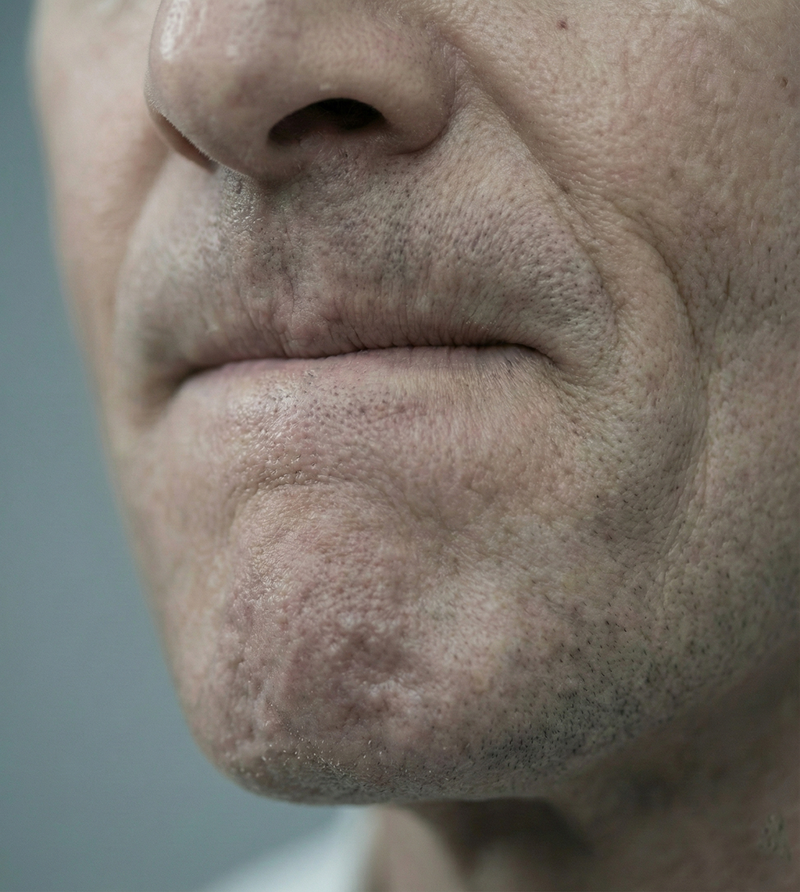

Comunicação
é Presença
A sua voz precisa ser tão relevante
quanto a sua competência.
Na Lleras, desenvolvemos a comunicação de líderes, executivos e profissionais que precisam se expressar com firmeza, autenticidade e clareza.
Nosso método combina técnica vocal, autoconhecimento e expressividade para fortalecer sua presença em reuniões, entrevistas, apresentações ou conversas do dia a dia.
Aqui, você aprende a comunicar a sua melhor versão com segurança, naturalidade e precisão.

Você sabe o que quer dizer, mas nem sempre consegue dizer do jeito certo
A maioria dos profissionais de alta performance convive com inseguranças que não compartilha com ninguém.
Alguns não gostam da própria voz, outros têm dificuldade de organizar ideias sob pressão.
O silêncio
Você sente que sua comunicação não acompanha suas capacidades.
A transformação
Você aprende a demonstrar suas reais habilidades por meio de treinamento.
Uma metodologia construída a partir de técnica, profundidade e experiência real
A Lleras Comunicação é conduzida por Natalia Lleras, fonoaudióloga especializada em comunicação humana e perita da justiça. A abordagem une precisão técnica, sensibilidade analítica e acolhimento.
Clareza e Direcionamento
para transformar sua comunicação
Três etapas que geram evolução concreta
Diagnóstico completo
Analisamos sua história, contexto e objetivos.
Aplicação
Consolidação e
Prática Estratégica
Você aprende a aplicar em situações reais e desafiadoras.
Desenvolvimento personalizado
Trabalhamos respiração, dicção, projeção e presença.
Sessões individuais para quem quer elevar sua comunicação ao próximo nível
Cada encontro é estruturado para gerar evolução concreta e perceptível, trabalhando aspectos técnicos e comportamentais que impactam diretamente sua fala. É o caminho ideal para quem deseja confiança, naturalidade e uma presença que inspire respeito.
Profissional
Comunicação clara e assertiva para ambientes corporativos.
Vocal
Expressividade e projeção que transmitem segurança.
Soluções estratégicas de comunicação para líderes e equipes
A comunicação é um ativo corporativo que gera credibilidade.
Segurança
Porta-voz seguro para representar sua marca com consistência
Voz e liderança
Desenvolvemos linguagem estratégica para times que representam empresas
Workshop
Palestras e programas de desenvolvimento em grupo
Dinâmicas práticas que transformam a comunicação de equipes inteiras.
Crise
Gestão da comunicação em situações críticas
Preparo técnico para que sua liderança mantenha a clareza quando mais importa.
O que muda quando você aprende a se comunicar de verdade
Passei anos me sentindo menor do que sou em reuniões. Depois do trabalho com a Natália, aprendi que não era falta de conteúdo — era falta de presença. Hoje falo em público, oriento minha equipe e me sinto confiante nas decisões difíceis.
Minha voz tremia em apresentações importantes. Em dois meses de sessões, mudei minha respiração, minha postura vocal e minha segurança. A transformação foi visível para todo mundo ao redor.
O processo da Natália vai muito além da técnica. Ela entende quem você é e trabalha a partir daí. Nunca me senti tão inteira quando falo — nas audiências, nas reuniões, no dia a dia.
Aprenda a se comunicar melhor, todo dia
Reflexões, exercícios e perspectivas sobre voz, presença e expressão autêntica.
Por que sua voz muda quando você está nervoso
Entenda o que acontece no seu corpo sob pressão e como treinar para manter a presença.
Ouvir bem é metade da comunicação
Líderes que comunicam com impacto não são apenas bons falantes — são ouvintes excepcionais.
3 exercícios para melhorar sua dicção em 10 minutos por dia
Técnicas simples e eficazes que qualquer profissional pode incluir na rotina.
Pronto para ser ouvido como você merece?
Cada processo começa por uma conversa. Sem compromisso, sem fórmulas prontas — só clareza sobre o que você precisa e como podemos chegar lá juntos.
Fonoaudióloga especializada
Método 100% personalizado
Perita da Justiça